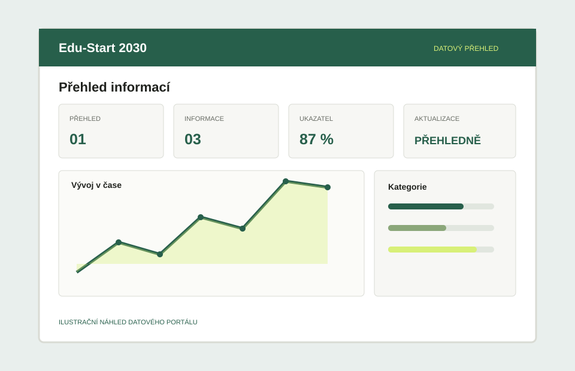

Illustrative interface concept
Cybersecurity · Learning
CyberAcademy
A learning project about online safety, with daily challenges, an interactive 3D shield and a suspicious-message analyser.
HTML / CSSThree.jsGemini AI
Open the project ↗The public link currently opens a sign-in screen.

Illustrative interface concept
Data portal
Edu-Start 2030
A responsive portal for presenting information and statistics clearly.
HTML5CSS GridJavaScript
A demo can be arranged on request.

Illustrative interface concept
Web application
Restaurace App
A school restaurant ordering system that connected customers, waiters, the kitchen and the till with live updates.
JavaScriptFirebase Firestore
A demo can be arranged on request.